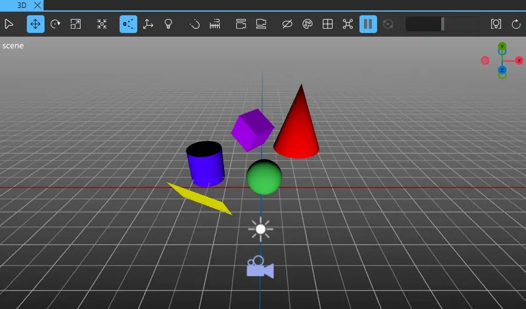
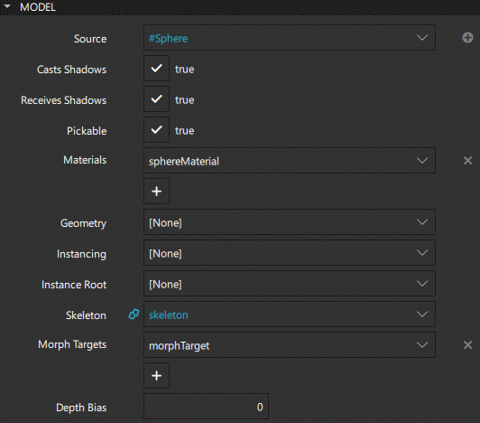
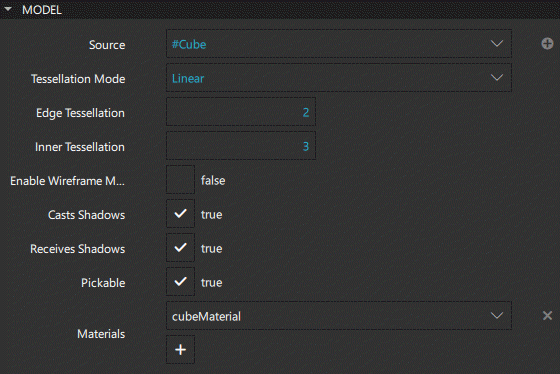

3D Models
The Components view features some built-in primitive 3D models. This allows you to add cubes, cones, cylinders, spheres, and planes (rectangles) to your scene.

A model component loads mesh data from a file. You can modify how the component is shaded by using materials. For more information, see Materials and Shaders and Creating Custom Materials.
To add a model component to your UI, do one of the following:
- Drag a model component from Components > Qt Quick 3D to the 3D view or to Navigator > View3D > Scene.
- Right-click in the 3D view and select Create > Primitives from the context menu.
Note: You can not create Empty models this way.
If you cannot find the model components in Components, add the QtQuick3D module to your project, as described in Adding and Removing Modules.

Model Properties
You can change the model type in Properties > Model > Source field. Select the  button to add custom model types to the list.
button to add custom model types to the list.

To use the geometry of this model when rendering to shadow maps, select the Casts shadows check box. To allow casting shadows on the model, select the Receives shadows check box.
To enable picking the model against the scene, select the Pickable check box. Picking transforms the screen space x and y coordinates to a ray cast towards the specified position in scene space.
A model can consist of several sub-meshes, each of which can have its own material. Select the material from the list in the Materials field. Select the button to add materials to the list. For more information about materials, see Materials and Shaders.
Specify a custom geometry for the model in the Geometry field. The Source field must be empty when custom geometry is used.
Set the Instancing property to render a number of instances of the model as defined by an instancing table. The instancing tables can be defined by using one of the instancing components available in Components > Qt Quick 3D > {Qt Quick 3D}.
Set the Instance root property to define the origin of the instance's coordinate system.
Specify the Skeleton property to define the Skeleton component used for this model. Skeletons are used for skeletal animation.
Specify Morph targets to use for rendering the provided geometry. Meshes should have at least one attribute among positions, normals, tangent, and bitangent for the morph targets. Quick 3D supports the maximum of eight Morph targets. Any additional targets after the first eight will be ignored. This property is not used when the model is shaded by a Custom Material.
Define the Depth bias property to ensure the shadows of your model are displayed correctly.
Tessellation Properties Available in Qt 5
The properties discussed in this section are only available if you selected Qt 5 as the Target Qt Version when creating the project.

Tessellation refers to additional geometry that resembles tiling, which you can add to your model. To dynamically generate tessellation for the model, select Linear, Phong, or NPatch as the Tessellation mode. Tessellation is useful when using a displacement map with geometry, or to generate a smoother silhouette when zooming in.
Specify an edge multiplier to the tessellation generator in the Edge tessellation field and an inner multiplier in the Inner tessellation field.
To display a wireframe that highlights the additional geometry created by the tessellation generator, select the Enable wireframe mode check box.